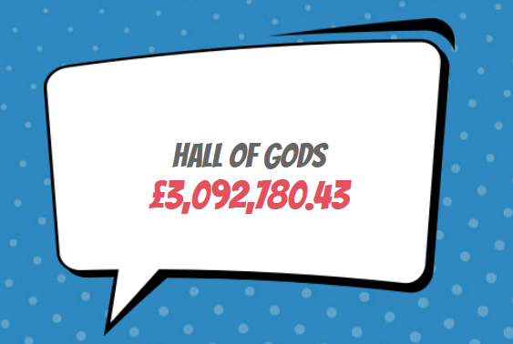
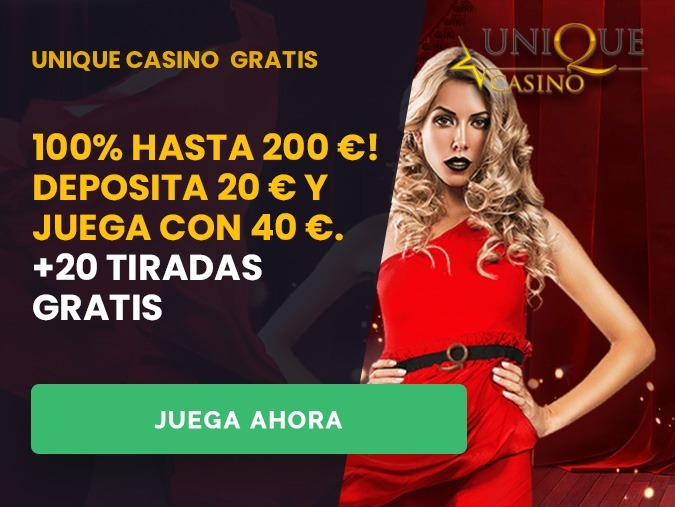
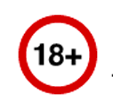

Más de 2 000.000 de euros ganados en casinos online españoles en este año… ¿Eres tú el próximo gran ganador?

Si todavía estás jugando a la antigua usanza en el casino o en las casas de apuestas, esta lectura te va a encantar. El año pasado, la Comisión de Juegos de Azar (Gambling Commission, por su nombre en inglés) publicó su informe anual sobre las ganancias de los casinos y las tiendas de apuestas, y se logró un descubrimiento asombroso. Existen menos casas de apuestas en España ahora que en esta época del año pasado, porque la gente está empezando a jugar de manera completamente diferente… ¿qué es lo que están haciendo ahora?
Están jugando tragamonedas en línea, con nuevas y emocionantes bonificaciones que los casinos en línea están regalando.
Cuando se trata de casinos, existe una estadística muy importante, lo que llamamos el valor RTP (retorno al jugador). Este valor indica la frecuencia con la que un jugador ganará, y hay una diferencia entre las tragamonedas de casino en línea y las tragamonedas de casino tradicionales.
Reclama tus partidas gratisLos casinos tradicionales suelen tener un valor RTP más bajo en comparación con los casinos en línea. ¡Dondequiera que elija apostar, 100 euros apostados en línea durarán en promedio más que 100 euros apostados en un casino tradicional! Sé lo que podrías estar pensando: "seguramente nadie se lleva el premio gordo jugando a las tragamonedas en línea ...", y sería inteligente si pensaras eso. La gente rara vez gana grandes sumas ... pero está la cuestión, la gente a veces sí se lleva el premio gordo ...
Desde 2009 en todo el mundo, los casinos en línea han pagado más de 1700 000.000 euros, y un jugador británico ha ganado más de 13 millones de euros. ¡Deberías ver un ejemplo de una de estas ofertas flotando en la parte inferior de tu pantalla ahora Juega 10 EUROS y obtén 150 tiradas gratis + 15 EUROS de bonificación equivalente!
¿Por qué te molestarías en ir a un casino físico si puedes jugar los juegos más nuevos con enormes bonificaciones desde la comodidad de tu casa?
Deberías ver un ejemplo de una de estas ofertas flotando en la parte inferior de su pantalla ahora con 200 partidas gratis.
¡Juega 10 EURO y obtén 200 partidas gratis + 15 EUROS de bonificación equivalentes!
Si haces clic en el enlace que se encuentra en la parte inferior de tu pantalla, puedes obtener este bono de inmediato.
Reclama tus partidas gratis  